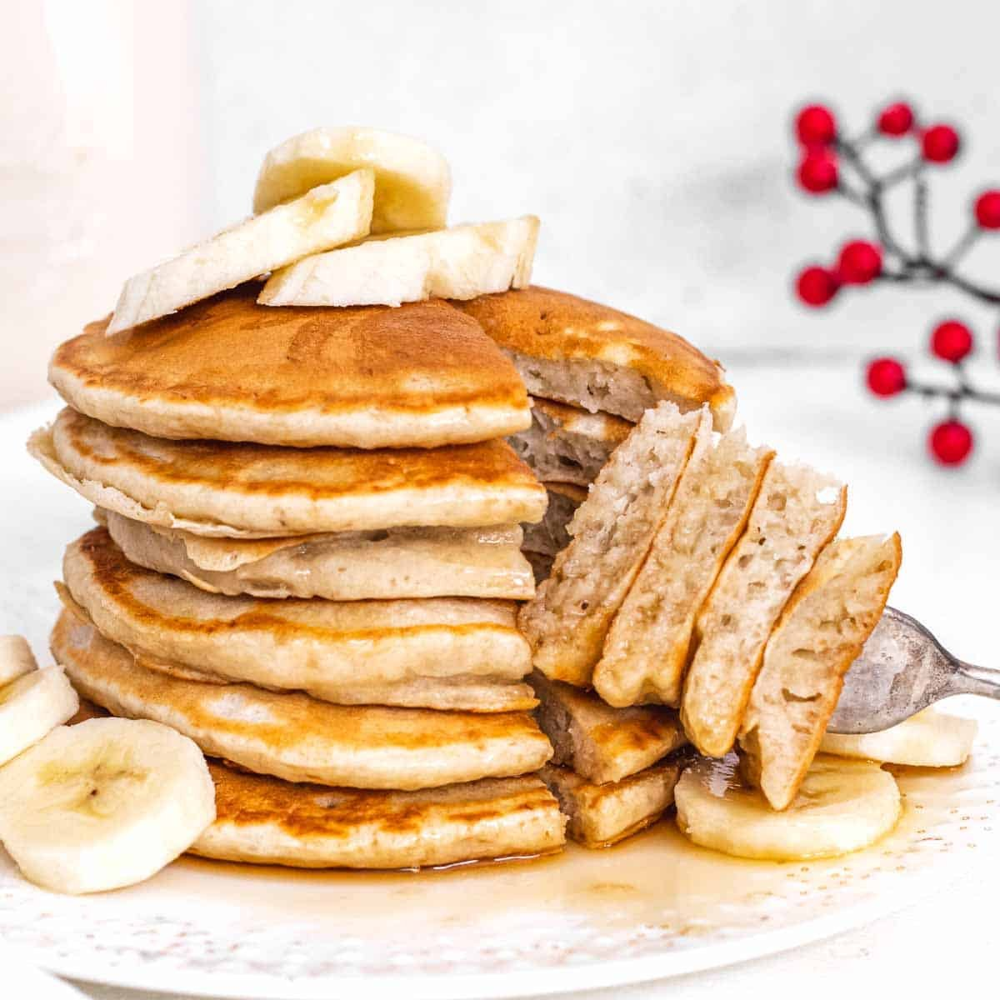

Banana & Oat Pancakes

What are Banana oat pancakes?
This simple recipe is made with just 4 simple ingredients and
gives a health, delicious pancake.
Ingredients
- 1 egg
- 1 ripe banana
- 3 spoons of oats, preferably insant
- 1 teaspoon of cinnamon
Steps
- First, mash the banana in a bowl with a fork
- Then, mix in the egg and beat
- Thirdly, add the oats and mix until you have a runny batter,
at this stage, if the batter is too thick, you can add a bit of milk.
- Lastly, cook in a frying pan on medium heat